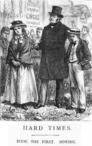

The novel follows a classical tripartite structure, and the titles of each book are related to Galatians 6:7, "For whatsoever a man soweth, that shall he also reap." Book 1 is entitled Sowing, Book 2 is entitled Reaping and Book 3 is Garnering.
Book 1: Sowing
Superintendent Mr. Gradgrind opens the novel at his school in Coketown stating, "Now, what I want is, Facts", and interrogates one of his pupils, Sissy, whose father works at a circus. Because her father works with horses, Gradgrind demands the definition of 'horse'. When she is scolded for her inability to factually define a horse, her classmate Bitzer gives a zoological profile; and Sissy is censured for suggesting that she would carpet a floor with pictures of flowers.
Louisa and Thomas, two of Mr. Gradgrind's children, go after school to see the touring circus run by Mr. Sleary, only to meet their father, who orders them home. Mr. Gradgrind has three younger children: Adam Smith (after the famous theorist of laissez-faire policy), Malthus (after Rev. Thomas Malthus, who wrote An Essay on the Principle of Population, warning of the dangers of future overpopulation), and Jane.
Josiah Bounderby, "a man perfectly devoid of sentiment", is revealed as Gradgrind's close friend. Bounderby is a manufacturer and mill owner who is affluent as a result of his enterprise and capital. He often gives dramatic and falsified accounts of his childhood, which terrify Mr. Gradgrind's wife.
As they consider her a bad influence on the other children, Gradgrind and Bounderby dismiss Sissy from the school; but the three soon discover her father has abandoned her thereto, in hope that she will lead a better life without him. At this point members of the circus appear, led by their manager, Mr. Sleary. Mr. Gradgrind gives Sissy a choice: to return to the circus and forfeit her education, or to continue her education and work for Mrs. Gradgrind, never returning to the circus. Sissy accepts the latter, hoping to be reunited with her father. At the Gradgrind house, Tom and Louisa are discontented by their education.
Amongst the mill workers, known as "hands", is a "man of perfect integrity" named Stephen Blackpool, called "Old Stephen": another of the story's protagonists. When introduced, he has ended his day's work and meets his close friend Rachael. On entering his house he finds that his drunken wife, who has been living apart from him, has made an unwelcome return. Stephen is greatly perturbed, and visits Bounderby to ask how he can legally end his marriage. Mrs. Sparsit, Mr. Bounderby's paid companion, disapproves of Stephen's query and Bounderby explains that ending a marriage would be complex and prohibitively costly. Leaving the house, Stephen meets an old woman who seems interested in Bounderby and says she visits Coketown once a year.
Gradgrind tells Louisa that Josiah Bounderby, 30 years her senior, has proposed marriage to her, and quotes statistics to prove that an age difference does not make a marriage unhappy or short. Louisa passively accepts the offer, and the newlyweds set out to Lyons (Lyon), where Bounderby wants to observe how labour is used in the factories there. Tom, her brother, elatedly bids her farewell.
Book 2: Reaping
Book Two opens on Bounderby's new bank in Coketown, over which the "light porter", Sissy's old classmate Bitzer, and the austere Mrs. Sparsit keep watch at night. A well-dressed gentleman asks for directions to Bounderby's house, as Gradgrind has sent him from London with a letter of introduction. It is James Harthouse, who has tried several occupations and been bored by all of them.
Harthouse is introduced to Bounderby, who regales him with improbable stories of his childhood. Harthouse is utterly bored by him, but enamoured of the now melancholy Louisa. Louisa's brother Tom works for Bounderby, and has become reckless and wayward in his conduct. Tom admires Harthouse, who holds him in some contempt, and Tom discloses contempt for Bounderby in the presence of Harthouse, who notes Louisa's affection for Tom and later learns that Tom has money problems - and that Tom persuaded Louisa to marry Bounderby to make his own life easier.
At a crowded union meeting, the agitator Slackridge accuses Stephen Blackpool of treachery because he will not join the union, and Stephen learns he is to be 'sent to Coventry' - shunned by all his fellow workers. Summoned by Bounderby, he is asked what the men are complaining of; and when Stephen tries to explain, Bounderby accuses Stephen of being a troublemaker and sacks him. Later Louisa and Tom visit Stephen, expressing regret, and Louisa gives him some money. Privately, Tom tells him to wait outside the bank after work.
When a robbery takes place at the bank, Stephen is suspected of the crime. Mrs. Sparsit observes the advancing relationship between James Harthouse and Louisa and suspects an adulterous liaison. Unable to hear their dialogue, she assumes the affair is progressing. When Harthouse confesses his love for Louisa, Louisa refuses him. They leave separately and Mrs. Sparsit follows Louisa to the station, where Louisa boards a train to her father's house and Mrs Sparsit loses her. When Louisa arrives, she is in an extreme state of distress. Having argued that her rigorous education has stifled her ability to express her emotions, Louisa collapses at her father's feet in a dead faint.
Book 3: Garnering
At Bounderby's London hotel Mrs. Sparsit gives him the news her surveillance has brought. Bounderby takes her back to Coketown and to Stone Lodge, where Louisa is resting. Gradgrind tells Bounderby that Louisa resisted Harthouse's advances but has experienced a crisis and needs time to recover. Bounderby is immensely indignant and ill-mannered, especially towards Mrs. Sparsit for misleading him. Ignoring Gradgrind's pleas, he announces that unless Louisa returns to him the next day, the marriage will terminate. She does not come back.
Harthouse leaves Coketown after Sissy tells him never to return. Rachael goes to the bank to say she knows where Stephen Blackpool is (he has left town to seek work elsewhere) and that she will write asking him to return to Coketown to clear his name. Bounderby is suspicious when she tells him Stephen was visited by Louisa and Tom the night he was dismissed, and brings her to Gradgrind's house where Louisa confirms Rachael's account.
With information from Rachael, Mrs. Sparsit tracks down Mrs. Pegler, the old woman who makes a mysterious annual visit to see Bounderby's house, and brings her to the house where she is revealed as Bounderby's mother. Far from having abandoned him to a life of hardship, she gave him a good upbringing and, when he became successful, allowed herself to be persuaded never to visit him. Bounderby is now publicly exposed as a ridiculous "Humbug".
On a Sunday outing, Rachael and Sissy find Stephen, who has fallen down an abandoned pit shaft while walking back to Coketown. He is rescued by villagers; but after professing his innocence and speaking to Rachael for the last time, he dies. Louisa and Sissy now suspect that Tom has committed the bank robbery, and told Stephen to loiter outside the bank in order to incriminate him. Sissy has already helped Tom escape by sending him to join Mr. Sleary's circus. Louisa and Sissy find Tom there, disguised in blackface. Gradgrind arrives and a plan is hatched with Sleary's co-operation to get Tom to Liverpool where he can escape abroad. The plan is temporarily foiled by the arrival of Bitzer, who hopes to obtain promotion from Bounderby by bringing Tom to justice; but Sleary arranges an ambush and Tom is taken to Liverpool where he boards ship.
Bounderby punishes Mrs Sparsit for his humiliation by turning her out. Five years later (says the narration), he will die of a fit in the street, while Mr. Gradgrind, having abandoned his Utilitarian ideas, will suffer the contempt of his fellow M.P.s. Tom will die in the Americas, having expressed penitence in a half-written letter to Louisa. Louisa herself will grow old and never remarries. Rachael will continue her life of honest hard work. Louisa, showing kindness to the less fortunate and being loved by Sissy's children, will spend her life encouraging imagination and fancy in all she encounters.
1915 - Hard Times, adapted as a silent film, directed by Thomas Bentley.
1977 - Hard Times, a mini-series for British television, with Patrick Allen as Gradgrind, Timothy West as Bounderby, Rosalie Crutchley as Mrs. Sparsit and Edward Fox as Harthouse.
1988 - Tempos Difíceis, a Portuguese film (shot entirely in black & white and directed by João Botelho) transferring the action to an unspecified industrial Portuguese city of the 1980s.
1994 - Hard Times, a second mini-series for British television with Bob Peck as Gradgrind, Alan Bates as Bounderby, Dilys Laye as Mrs. Sparsit, Bill Paterson as Stephen, Harriet Walter as Rachael and Richard E. Grant as Harthouse.
1998 - Hard Times, a BBC Radio adaptation starring John Woodvine as Gradgrind, Tom Baker as Josiah Bounderby and Anna Massey as Mrs. Sparsit.
2000 - Hard Times, a theatrical adaptation for the stage by Michael O'Brien and directed by Marti Maraden at Canada's National Arts Centre.
2007 - Hard Times, a second BBC Radio adaptation, this time starring Kenneth Cranham as Gradgrind, Philip Jackson as Bounderby, Alan Williams as Stephen, Becky Hindley as Rachael, Helen Longworth as Louisa, Richard Firth as Tom and Eleanor Bron as Mrs. Sparsit.
2018 - Hard Times, a Northern Broadsides touring adaptation written by Deb McAndrew and directed by Conrad Nelson.